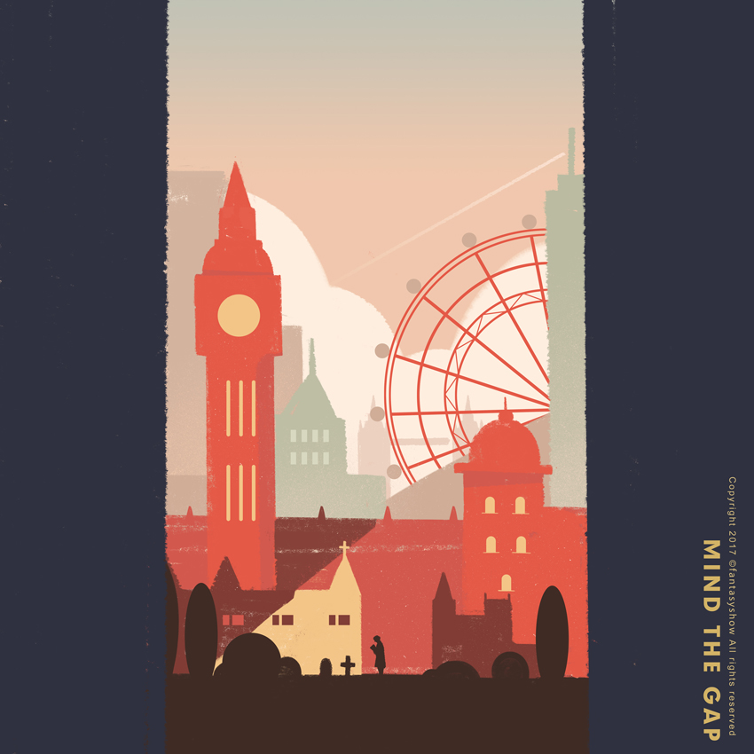
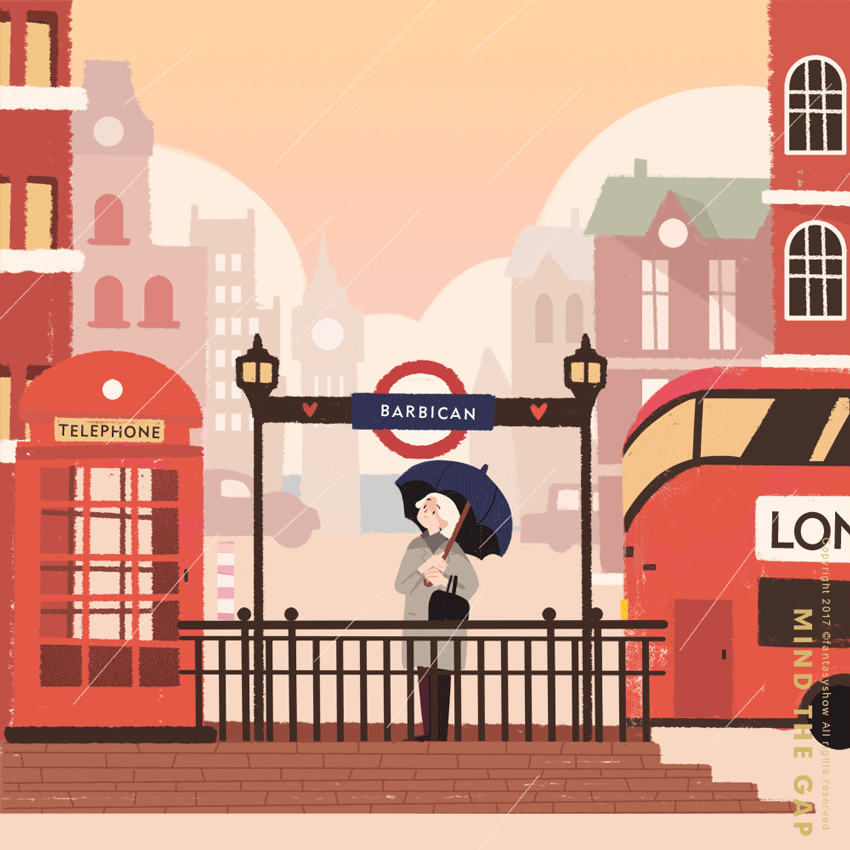
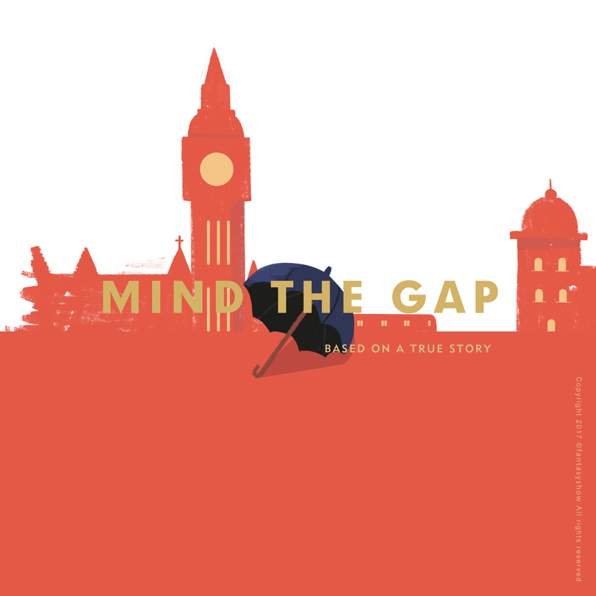

"Mind the gap"
意思为“注意月台间隙”，是伦敦地铁标志之一，地铁停靠或者从月台出发时，会由一个男声在广播里提醒大家注意地铁间隙。
每天有许多行人来来往往，但很少人发现经常会有一位白发老人常年坐在地铁站里，却从不上车。这位老人是玛格丽特，而在广播上里循环播放的这句“Mind the gap”是她的丈夫——英国演员奥斯瓦德在20世纪50年代为伦敦地铁录制的。
自2007年丈夫去世后，伦敦只有堤坝站还播放着他的录音，于是玛格丽特便经常坐在这个地铁站，一遍一遍地听着她丈夫的声音。
2012年11月，玛格丽特发现，丈夫的声音被电子提示音替换了，伤心的她写了封信，请求伦敦地铁可以换回丈夫的声音。
伦敦地铁被这份真挚的爱情感动，也为了纪念奥斯瓦德，在2013年恢复使用了来自她丈夫那句经典的"Mind the gap"。

这座城很大，大得我不知道要在哪里才能找到你
这座城也很小，小得好像一回头，就能感觉到你在身边

所以无论这场雨会下多久，我都没有离开的理由

每天想着你，就能感受到你
念念不忘，这份声音就是最好的回响
有时候我也会想，哪天如果我们与挚爱的人分开，也是否无论过多久都依然会因为一个声音，一张旧照，就将我们的记忆重新燃起。
哪怕再久，再远。
爱意都能轻易地被 唤起。
插画：饭太稀